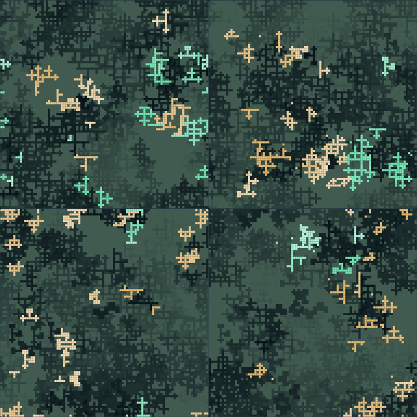
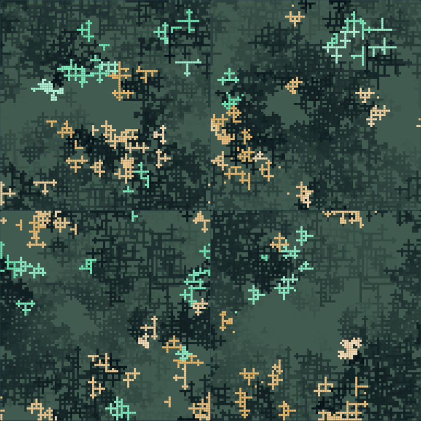
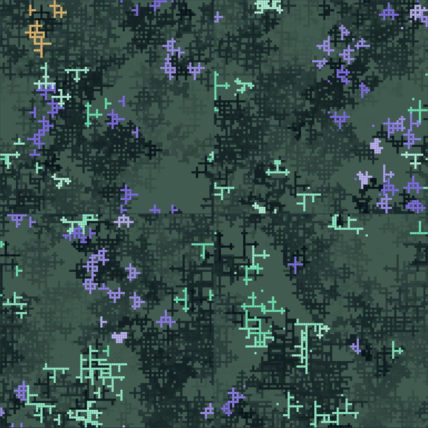

Uniform food · three seeds · frozen horizon 6,000
Still changing at 6,000 ticks.
All three uniform-food worlds stayed alive, kept two founder families, and continued changing their occupied regions through 6,000 ticks. Choose a seed below to watch its recorded states. This is an engineered-world longevity screen, not evidence of adaptation or improved fitness.
Recorded states only. The world is paused when it opens. Saved frames follow a 20-tick cadence, with an exact terminal frame added if extinction happens between samples. Nothing is interpolated, simulated, or continued in this page; extinction is labeled at its actual tick.
Overall decision
Three of three pass; keep this as the baseline.
Seed 1201 earned the two additional frozen seeds, and 1202/1203 passed the same numerical and visual criteria. Stop this screen at 6,000 ticks. This new authorization does not reopen the earlier patch-world STOP.
Checking for the accepted seed 1201 replay…
Recorded world
Uniform · seed 1201
Paused · recorded replay
Seed decision
- Family 1
- Family 2
- Family 3
- Food remaining
Fixed 500-tick windows
Turnover and ceiling pressure
Cap occupancy is post-step population exactly 48. Near-cap means 47 or 48; the denominator stays 500 ticks.
| Recorded window | Births | Deaths | Population, min–max · end | Cap 48 | Near-cap 47+ | Blocked births | Occupied cells · end | Families · end | Inherited programs · end |
|---|---|---|---|---|---|---|---|---|---|
| Waiting for accepted run data. | |||||||||
Population minimum and maximum use executed ticks only. After extinction, the endpoint names the actual terminal tick; later rows are not invented.
What is worth keeping?
In the final 500 ticks, the three seeds produced 107,100 and 84 births, with 106,95 and 74 deaths. Ceiling occupancy was 6.6%,2.6% and 0%. This is ongoing turnover with changing occupied areas, not a frozen arrangement.
There is still a limitation: each seed lost one founder family. Seed 1203 ended with 32 mint bodies and only 5 purple bodies. The rare family may disappear later;6,000 ticks does not establish indefinite diversity or increasingly complex behavior.
Next rule to plan: compare this fixed uniform baseline with one broad, slowly moving food region, keeping the same offered budget. The question is whether supplied environmental motion creates clearer expansions and retreats. No moving-food result is claimed here; it needs its own reviewed plan.
Inspect fixed late frames and decisions



Replay not yet available
No accepted seed 1201 recording is published here.
This companion does not create or continue a world. Once the frozen run passes its correctness and provenance checks, its explicit record can be linked here.
Replay could not be loaded
The listed evidence is unavailable or malformed.
No replay frame was shown. Check the source links below and the accepted evidence record.